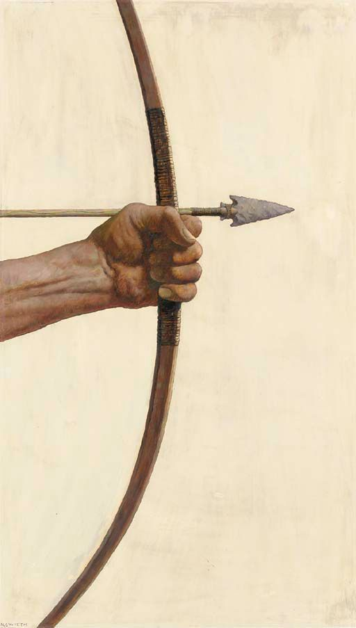
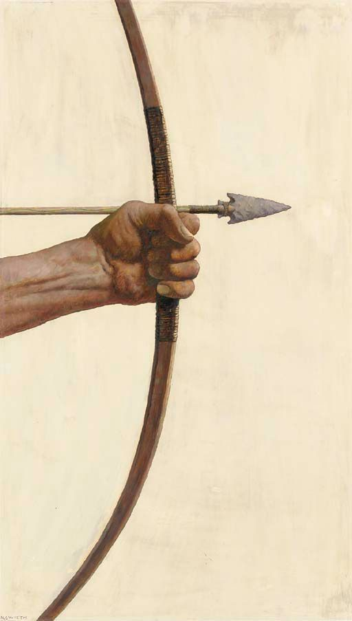

Filsafat
Istilah “filsafat” ini sebenarnya berasal dari Bahasa Yunani, yakni “philosophia”, yang mana
merupakan gabungan dari kata “philo” dan “sophia”. Philo berarti ‘cinta dalam arti yang luas’,
sementara sophia berarti ‘kebijakan atau pandai’. Jadi, dapat disebut bahwa filsafat ini adalah
keinginan untuk mencapai cita pada kebijakan.
Banyak ahli yang mendefinisikan apa itu filsafat. Poedjawijatna berpendapat bahwa filsafat
adalah sejenis pengetahuan yang berusaha mencari sebab secara sedalam-dalamnya bagi segala
sesuatu yang berdasarkan pikiran belaka. Lalu menurut Hasbullah Bakry, filsafat memiliki
definisi berupa sejenis pengetahuan yang menyelidiki segala sesuatu secara mendalam, mulai dari
ketuhanan, alam semesta, hingga manusia sehingga dapat menghasilkan pengetahuan tentang
bagaimana hakikatnya sejauh yang dapat dicapai oleh akal manusia. Kemudian ada juga tokoh
filsafat terkenal, Plato, yang mendefinisikan filsafat adalah pengetahuan yang berminat untuk
mencapai pada kebenaran asli.
Nah, berdasarkan beberapa pendapat dari para ahli tersebut maka dapat disimpulkan bahwa filsafat
adalah sebuah ilmu yang berusaha mencari sebab secara mendalam berdasarkan pemikiran dan akal
manusia. Filsafat ini juga dapat menjadi pandangan hidup seseorang sekelompok orang mengenai
kehidupan yang dicita-citakan. Namun, filsafat ini dapat juga diartikan sebagai suatu sikap
seseorang yang sadar dan dewasa ketika memikirkan segala sesuatu secara mendalam dan melihat
secara menyeluruh dengan segala hubungan.

 
